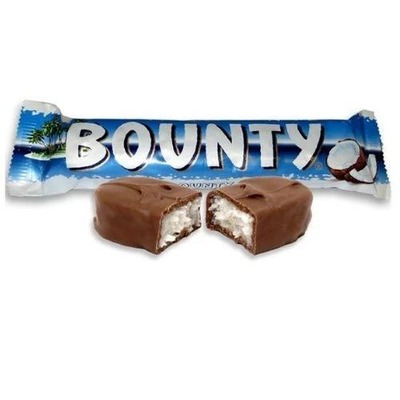

Fun Facts
Did you know that Bounty is a coconut-filled chocolate bar that has been delighting taste buds since its introduction in 1951?
Originally created by the British company Mars, Bounty is known for its distinct combination of moist and tender coconut covered in a layer of smooth milk chocolate.
The coconut filling in Bounty bars is made from freshly grated coconut, giving it a rich and authentic tropical flavor.
Bounty has become a popular treat worldwide and comes in various forms, including the classic Bounty bar and Bounty Dark for those who prefer a more intense chocolate experience.
Irresistible Goodness

Nutritional Goodness
Indulging in the delicious Bounty candy can be a delightful experience, but it's essential to be mindful of its nutritional content.
- Calories: A typical Bounty bar contains around 192 calories, making it a moderate-energy treat.
- Fat Content: Bounty is known for its coconut filling, which contributes to its fat content. One bar typically contains about 12 grams of fat.
- Sugar: The sweetness of Bounty comes from sugar. A standard bar contains approximately 19 grams of sugar.
- Protein: While Bounty is not a significant source of protein, it provides around 2 grams per bar.